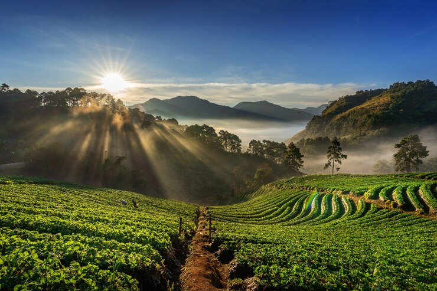

Conoce los hermosos ecosistemas y la biodiversidad que el departamento de Boyacá y Cundinamarca tiene para tí.
Se encuentran en las tres cordilleras, en la Sierra Nevada de Santa Marta, la Sierra de la Macarena y la Serranía del Baudó, y su altura sobre el nivel del mar oscila entre los 0 y los 3500 m.s.n.m. La flora incluye orquídeas, bromelias, encenillo, raque, mortiño, aliso, romero, musgos y líquenes. La fauna incluye aves, anfibios y mamíferos como tigrillos, dantas, venados y borugos.
Son ecosistemas de interés para el desarrollo de Bogotá y la región, y tienen una alta presencia de fauna y flora endémica.
Estos bosques se encuentran en áreas de alta humedad y altitudes medias, donde la niebla es común. Son conocidos por su exuberante vegetación, que incluye una gran variedad de plantas epífitas, musgos y helechos. Los bosques de niebla son importantes para la conservación de especies de flora y fauna únicas y para la regulación del ciclo hidrológico.
En las regiones más bajas de Cundinamarca, especialmente en la zona del altiplano cundiboyacense, se encuentran extensas sabanas. Estos ecosistemas se caracterizan por su vegetación de hierbas y arbustos dispersos, adaptados a condiciones semiáridas. Las sabanas son hábitat de una variedad de especies animales, incluyendo aves rapaces y mamíferos como el venado cola blanca y el zorro.